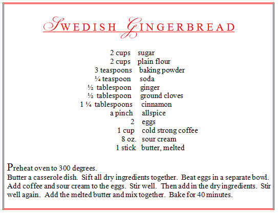
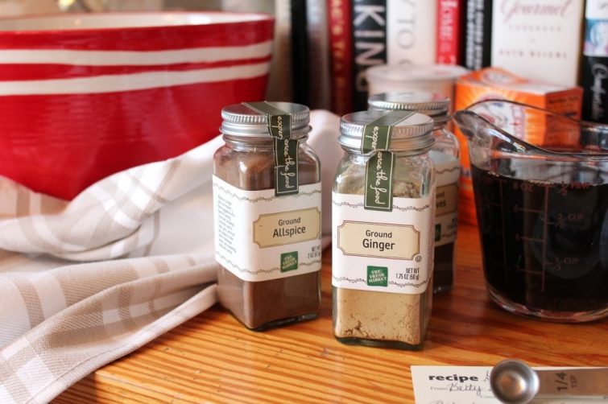

.png)
.PNG)
.PNG)
.PNG)
.PNG)
.PNG)
.JPG)
.JPG)
.PNG)
.PNG)


Happy weekend! Are you in the middle of decking the halls? I took a short break from it today to bake something delicious – some gingerbread. If you look in many stores and in most home or kitchen catalogs during December, you are likely to find gingerbread houses or some form of gingerbread mix. I think the houses and the cookies are lovely, but I’m afraid I am not a big fan of the kind made with molasses. Today I used my mother-in-law’s recipe for her Swedish gingerbread.
It is made with spices, sour cream, and coffee. (Yes, you read that right. 🙂 ) It has a much lighter texture and flavor than most gingerbreads.


The batter is very thin. 
I don’t know why it is called gingerbread when it is really like a cake. (And of course, I pile on the whipped cream like I do to every dessert around here!)

At this point in today’s post, I had planned to share some gingerbread creations from a number of creative talented people with you…but before I do, you have to make me a promise. You see, I plan to show you my pitiful gingerbread creations next week when I do a post on the kitchen for Christmas – and I am NOT talented when it comes to decorating anything that has been baked. So promise me you won’t laugh when you see mine next week. Okay? You promise? Alright then, here are the pretty ones.
We’ll start with these little gingerbread cupcakes. cdn.blogs.babble.com
cdn.blogs.babble.com
These cookies are too beautiful to eat.
 thepatternedplate.wordpress.com
thepatternedplate.wordpress.com
I love to use the cookies as ornaments like these here. rodale.com
rodale.com
Isn’t this invitation to a gingerbread party the cutest thing with it’s little gingerbread house? celebrating-christmas.com
celebrating-christmas.com
Or how about this tiny one for a mug? notmartha.org
notmartha.org
Two years ago, the November issue of House and Home magazine featured a big spread on Sarah Richardson. I bought it and read it cover to cover because I loved Sarah’s farmhouse, but there was more to the issue than her house. There was a feature on a home that used individual gingerbread houses to hold name cards. Look how pretty these are!
Martha Stewart has had some very pretty gingerbread houses – like this traditionally styled one.
The large but simple house on the table here is one of my favorites. marthastewart.com
marthastewart.com
But the gingerbread house that was my inspiration for my attempt at making one is this creation from Jenny Steffens (but mine is nowhere near as good as this one!)
I hope you have enjoyed seeing some of these creations…maybe they have inspired you to make a gingerbread house yourself. Don’t forget about the giveaway that was discussed in my last post. Just leave a comment and you are entered! 
So my question for you today is…
Do you traditionally make anything “gingerbread-ish” during the holidays?
hoping to hear from you soon,

**Giveaway has closed.**
If you are interested in purchasing the books for Christmas reading, follow the link below the photos below (my Amazon Affiliate link.)


.PNG)
I love red, always have. In our first home after putting out my usual Christmas red in my kitchen and dining room, I thought why don’t I use red all the time! That was the beginning…it doesn’t hurt that my oldest daughter went to NC State. (more reasons for red) Love the gingerbread houses, that is one thing I have never tried. Maybe…
I have never made anything gingerbread…but my mother-in-law does. Brings back a good memory of the lemony icing. Have you ever seen the gingerbread houses at the Biltmore House in Asheville? OMGoodness! They are gorgeous!
I have never made a gingerbread house or ornament, but after seeing all your examples I certainly want to!
Greetings from one of your fans. Love the Christmas tradition posts. Would love to win the giveaway! Thanks for the chance to win!
oh yes, my husband eagerly anticipates his gingerbread boys! He likes them with minimal frosting decoration and raisin buttons! I use homemade not edible gingerbread boys on our kitchen tree.
I have always thought I would like to try decorating a gingerbread house. I see kits……have you used them or do you make ALL of it?
Yours look pretty nice!
Kelly,
I usually make a Trader Joe’s mix and serve whipped cream with it. I am going to a gingerbread house decorating party with my investment group. It should be fun.
I loved the samples you shared.
Karen
Your recipe looks wonderful!
With little ones around I have decided to stick with
graham cracks houses that I’ve hot glued. Rarely do they
break and the kids can have more than one to decorate. We
gather them all together on a tray, add coconut for snow
and ta-dah, you have a village. Good for these younger years. 🙂
I make a chewy molasses cookie each year for my husband to share at work.
That gingerbread sounds amazing! I love that it is lighter in texture! I am going to try it tomorrow!
I don’t like the molasses flavor either, so I usually don’t bake gingerbread. I will have to try your recipe. I am sure my Finnish/Swedish husband will like it.
The gingerbread cake looks delicious! My oldest little boy was requesting gingerbread this week. I think he will love this. Our family tradition is building a gingerbread village (my hubby is an architect). It is beautiful to display but not so much to eat:)
I printed out the recipe but then I read about the coffee… I guess I could get a cup from my sweet mother-in-law 🙂
I love the smell of gingerbread. What a seasonal scent! Great post.
I haven’t been a huge fan of Gingerbread houses because all the candy that comes with it to add makes it feel cheesy to me, but I LOVE the examples you showed here…So very classy. I think my husband and I are going to make one to sit out as decoration and maybe leave off some of the candy. The candy always made me think of something good for kids, but since we don’t have any yet, this grown-up gingerbread house would be fun.
Well I eat lots of gingerbread. Does that count?
As much as I love coffee and cake, I’m certain I’d love this gingerbread. Actually, I like the taste of ginger. Several years ago, Southern Living had a recipe where you made a chocolate cream cheese loaf to go with the ginger snaps. It sounds terrible, but EVERY time I’ve ever made it and taken it to a holiday party, it is snapped up like mad. It’s a surprising change. After you make the “loaf”, you cover it in chocolate curls – crazy good!
My two children are college age. But, I remember the days when they were little and each year we would make individual gingerbread houses and oranmnets for the Christmas tree. Maybe one day, I can do the same with grandchildren. I can’t wait to try your Mother In Law’s recipe for cake like gingerbread. You have inspired me to pull all my children’s Christmas books off the shelves at home and school to use as part of this year’s decorations. Thank you for the blessing of your beautiful blog. You inspire me. Have a very Merry Christmas!
I make ginger cookies every year and paint the bottoms with white chocolate.
I adore that house on the edge of the mug! Must find out how to do that, must find out how to do that, must find out how to do that…….!
That gingerbread house on top of the mug is adorable! I bet it would taste great with some hot chocolate and whipped cream.
I don’t make gingerbread anything for Christmas, but now I want to! I am thinking I want to try the little houses that sit on the mugs! That is so great!
Yum! I have never made gingerbread anything, but I have plans to try this year. I’m hoping to have a cookie decorating party with some preschoolers. If my cookies are successful, then I’ll try a gingerbread house as well.
Kelly,
My daughter has a candy house mold that she recieved from a friend of mine and it is a plastic model of a traditional gingerbread house. All I have to do is take her to buy the candy, icing and goodies to decorate it and let the fun begin. She has also made an Easter themed and Halloween themed gingerbread house using the plastic model. We just buy different candies for each holiday. It’s all the fun without all the stress of trying to get the gingerbread walls to stay up and together. We play christmas music and I bake while she works on it. Then when the season is over I just sit the whole thing in my sink with warm soapy water and wash all of the mess down the sink. I do like gigngerbread but the candy house kind of gives us the best of both worlds.
I LOVE your blog and these beautiful gingerbread houses, I usually make them with my grandchildren with lots of candy! I would love to try one like you have pictured, simple and elegant!
Merry Christmas,
Cheryl
Love this post….love gingerbread..You gave me an idea about the gingerbread house invitation!…such a great idea…and love the gingerbread on the mug!!…I so love Gingerbread houses…A few years ago, we traveled to the Grove Park Inn in Asheville, NC to see the Gingerbread houses…they were beyond awesome!!…We are thinking about taking our granddaughter there this year!…
Have a wonderful day!!!
Mmmm…..your gingerbread recipe sounds yummy! My husband, daughter, and 2 yr old granddaughter Emery are spending the weekend in downtown Chattanooga. Emery made a gingerbread house at the Children’s Muesum yesterday and we have it packed in a box to take back to NC today. It is adorned with every color and candy imaginable ( a few half eaten or licked)
and I think it is the the most beautiful gingerbread house I have ever seen!!!
Merry Christmas!!!!!! Katrina Cantler
I’m in the midst of “decking the halls” and baking like crazy as I’m hosting our women’s club December brunch next week, agggh! But I have to think about squeezing this gingerbread recipe into the schedule, it looks wonderful. This is the second recipe I have come across in a short time that called for a cup of coffee, interesting. The gingerbread house pictures were amazing and mouth-watering. The extent of my holiday gingerbread experience is with decor,I have many plates, ornaments, candle holders, with this theme, so fun and whimsical!
Love to read. Love Jan Karon. Would love to win.
Your gingerbread “cake” looks divine.